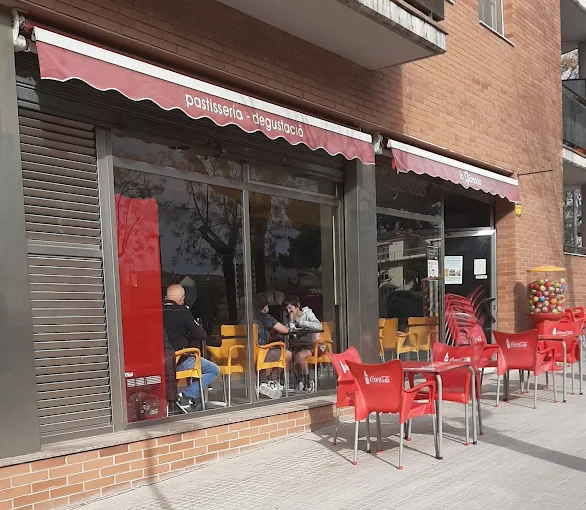

Situació actual de la Panaderia Lluc Xaro
La fleca funciona de manera tradicional, amb processos manuals i sense eines digitals que permetin optimitzar la producció o millorar la comunicació amb els clients.
El forner sovint es troba amb problemes de previsió: alguns dies falta pa i altres en sobra, especialment els caps de setmana. A més, no disposa de pàgina web ni sistema de reserves.

Problemes detectats
- Manca de previsió de comandes.
- Sobrecproducció en alguns productes.
- Malbaratament alimentari.
- Absència d’un sistema de fidelització.
- Comunicació limitada amb els clients.
- Inventari poc controlat.
Oportunitats de millora
- Implementar un sistema de comandes anticipades.
- Ús d’eines digitals per controlar inventari.
- Automatitzar tasques repetitives.
- Crear un sistema de punts o recompenses.
- Millorar la comunicació amb els clients.
Objectius del Pla de Transformació Digital
El projecte busca modernitzar la fleca i adaptar-la a les necessitats actuals dels clients.
- Reduir el malbaratament alimentari.
- Augmentar l’eficiència de producció.
- Fidelitzar clients i atraure’n de nous.
- Digitalitzar processos interns.
- Millorar la imatge del negoci.